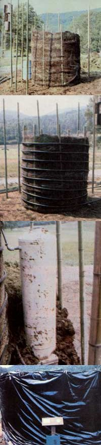

Mother's second experimental compost heater began with a ""core"" of material to be composted (consisting of three parts wood chips for every one part manure) that was held in place by a pole-supported chicken-wire cage. (This inner heap measures a full six feet wide by eight feet tall). The internal core was then wrapped in a series of coils of 1""-diameter black semiflexible plastic tubing, which - in the completed pile - carries the to-be-heated water. In an experimental attempt to increase the heap's ability to maintain and store a supply of hot liquid, a 30-gallon water heater tank was ""plumbed in"" to the line, and then buried in an outer three-foot layer of chicken-wire-supported compost. The entire structure was then covered with a wrapper of heat-gathering black plastic.